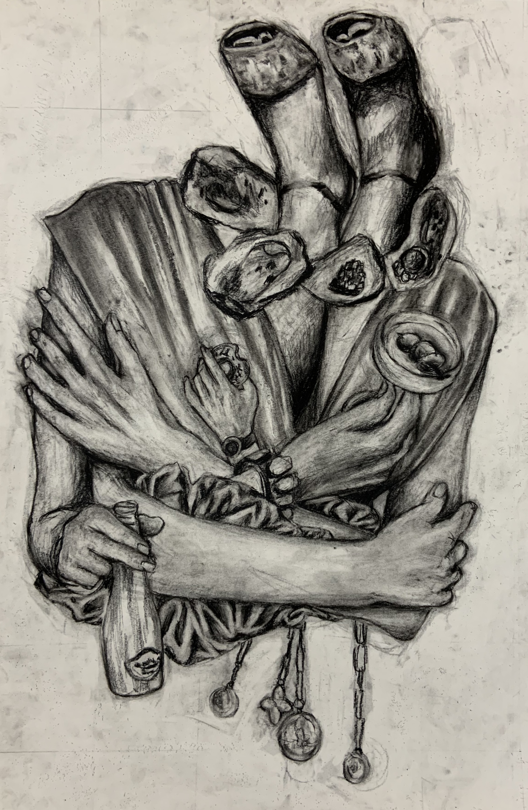
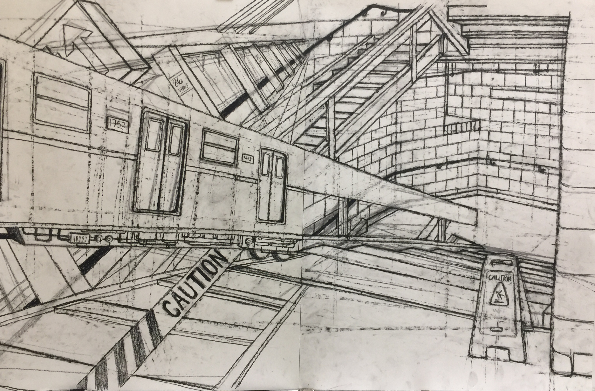
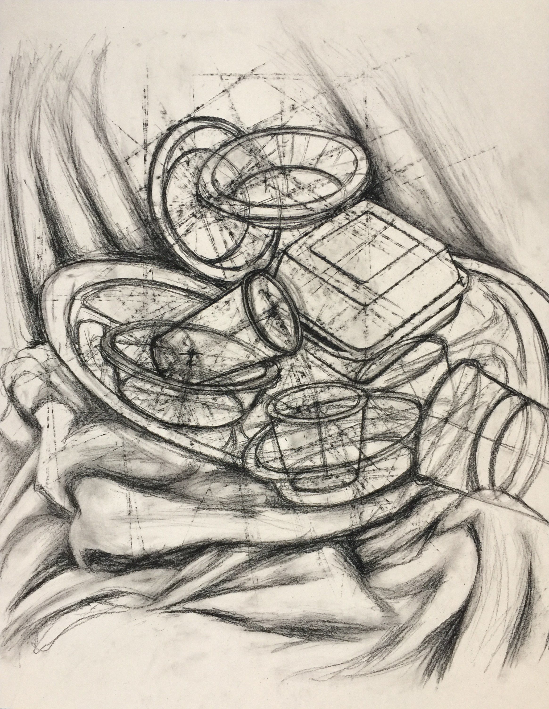
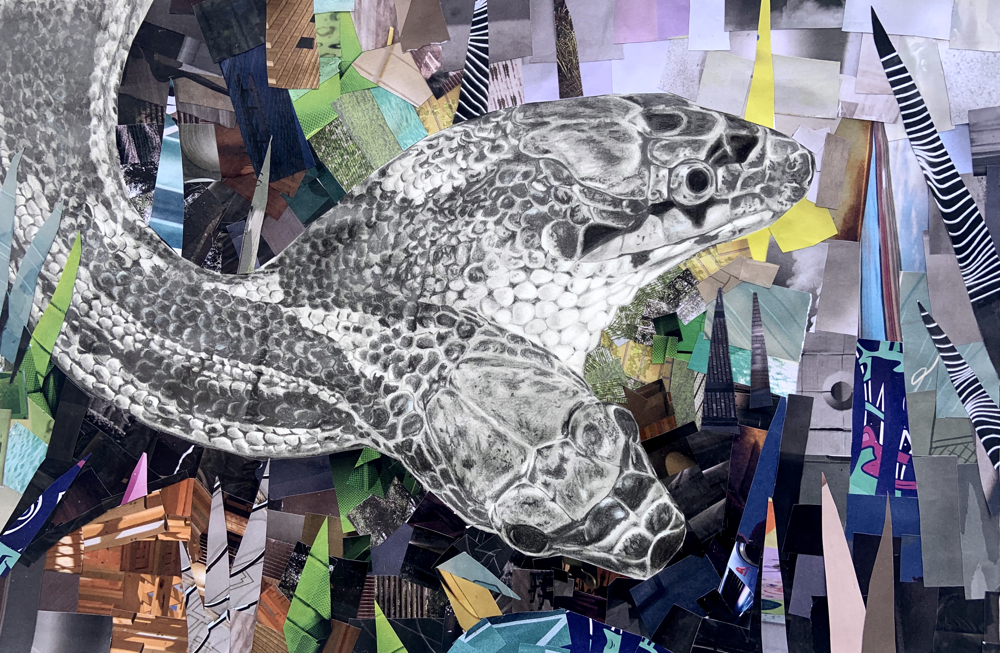
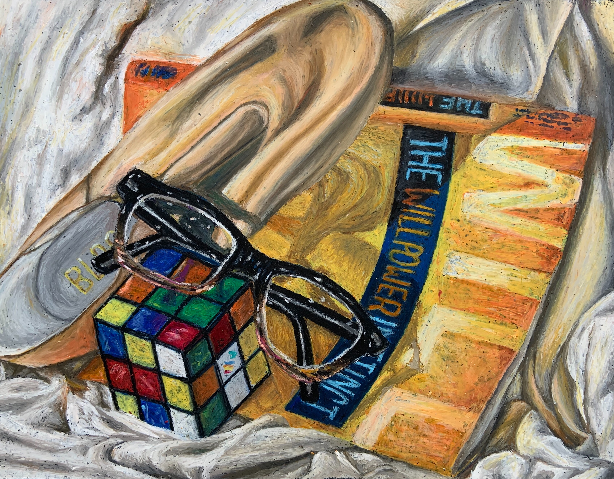

Take a look at some art pieces I've made!
I primarily do pen & ink drawings but I do enjoy oil pastels and charcoal.
Charcoal:

Fall 2021: drawing of a collage I created out of magazine clippings.

Fall 2021: observational drawing of a flight of stairs transitioning into a train station when extending the linework.

Fall 2021: still life of some disposable cups, plates, bowls, and containers.
Pen & Ink:


Miscellaneous:

Winter 2021: Snake pencil drawing with a collage background created from magazine clippings.

Winter 2021: Oil pastel self portrait still life.